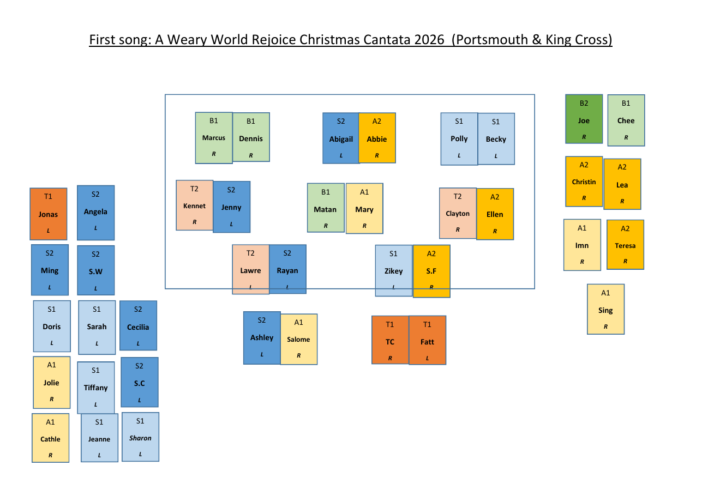
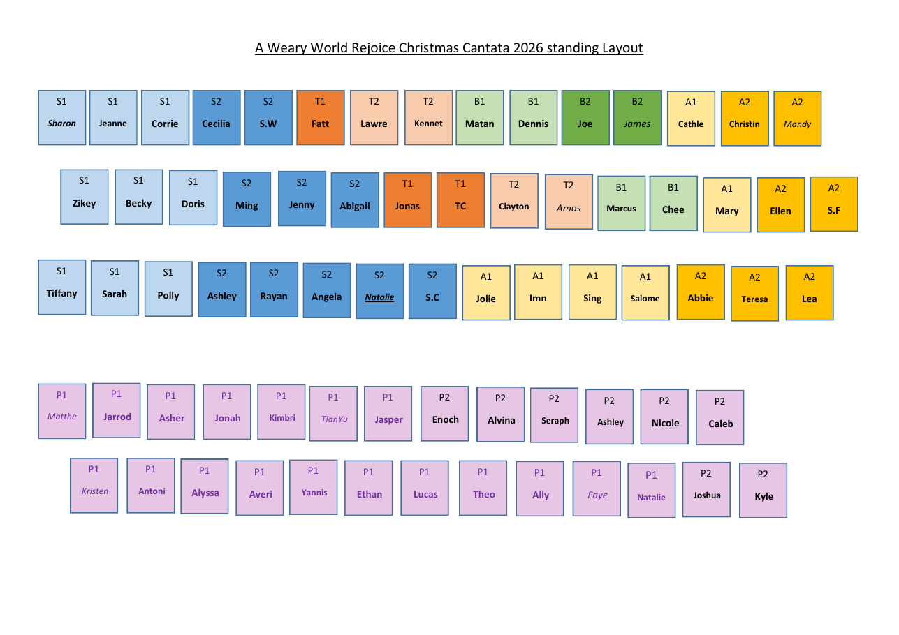

5/12 樸茨茅斯場
Portsmouth Chinese Christian Church
日期：5/12/2026 (六)
Date: Sat 5 Dec 2026
地址：Wesley Centre, 128 Fratton Road, Fratton, Portsmouth PO1 5DD
Address: Wesley Centre, 128 Fratton Road, Fratton, Portsmouth PO1 5DD
午餐
Lunch
由教會提供午餐。
Lunch is provided by the church.
如有食物敏感，請自行準備午餐。
If you have any food allergies, please prepare your own lunch.
交通及泊車
Transport and Parking
集合：10:00 am 於 Portsmouth Chinese Christian Church。
Gather at 10:00 am at Portsmouth Chinese Christian Church.
泊車：教會會提供泊車許可證，可泊車於教會附近。
Parking: the church will provide parking permits so you can park close by.
回程：演出完畢後 30 分鐘出發。
Return: we leave 30 minutes after the performance ends.
Epsom 集合點及出發時間：待確認 TBC
Meeting point and departure time in Epsom: 待確認 TBC
泊車許可證報到方法：待確認 TBC
How to collect the parking permit: 待確認 TBC
順風車配對：稍後公佈。
Lift share arrangement: to be announced.
交通小組：待確認 TBC
Transport team: 待確認 TBC
家長如不陪同小朋友前往，須簽署同意書，授權 CCEMC 帶同小朋友前往 Portsmouth。
Parents who will not travel with their child must sign a consent form authorising CCEMC to take the child to Portsmouth.
講員及主領
Speaker and Pastor
講員
SpeakerRev Nguang
SpeakerRev Nguang
祝福及報告
Benediction and Announcement('孫牧師', '(教會牧師)')
Benediction and Announcement('孫牧師', '(教會牧師)')
翻譯
TranslationShirley Chong (粵語 Cantonese), Sharon (English)
TranslationShirley Chong (粵語 Cantonese), Sharon (English)
程序
Order of Service
- Beginning MC 開場TC
- Overture of Joy 喜樂的序樂Part 1: Joe, Shirley Chong, Chung Fat, Tiffany, Natalie, Lucas
Part 2 舞蹈 Dance: Alice, Summer, Jolie, Maggie
Part 3: Teresa, Angela, Shirley Walker, Sharon, Sarah, Ashley - A Weary World Rejoice 困倦世人當歡欣CCEMC Choir + 舞蹈 small movement dance
- 旁述 Narration
- Redeem, Restore, Renew 救贖，修復，更新CCEMC Choir
- Testimony 見證分享
- 旁述 Narration
- Arise! Rejoice! 興起！歡欣！CCEMC Choir + 旗帶舞 flag and ribbon dance
- 旁述 Narration
- Come, Graceful Rose 聖潔玫瑰，請降臨CCEMC Choir + 獨唱 soloists: TC, Jonas, Teresa
- 旁述 Narration Angels Choir 入場 come in
- Away in a Manger 聖嬰孩子主耶穌CCEMC Choir + Angels Choir + 獨唱 soloist: Averi / Nicole
- 旁述 Narration
- Sing, O Heavens 諸天歌唱CCEMC Choir + Angels Choir
- Sermon 短講講員 Speaker全體離台，詩班更換詩班袍 All leave the stage. Choir change robes.
- We are the reason HandmimeDoris, Ellen, Mary, Chung Fat, Jonas, Ashley T, Seraphina, Jolie, Clayton, Angela全場熄燈 Blackoff for the whole church
- 旁述 Narration Angels Choir 入場 come in
- The Star Still Shines Angels Choir
- 旁述 Narration
- O Holy Night (Finale) 啊！聖善夜（終曲）CCEMC Choir + Angels Choir + 獨唱 soloists: TC, Clayton
- Benediction 祝福孫牧師 (教會牧師)Angels Choir 離台 leave the stage
- Blessing Psalm: Psalm 23 祝福詩：詩篇二十三CCEMC Choir
- Announcement 報告孫牧師 (教會牧師)
程序可能有微調。The order may be adjusted slightly.
站位
Standing Layout
以下為第一首歌 A Weary World Rejoice 的站位。
First song standing layout.

全體站位圖
Full standing layout
